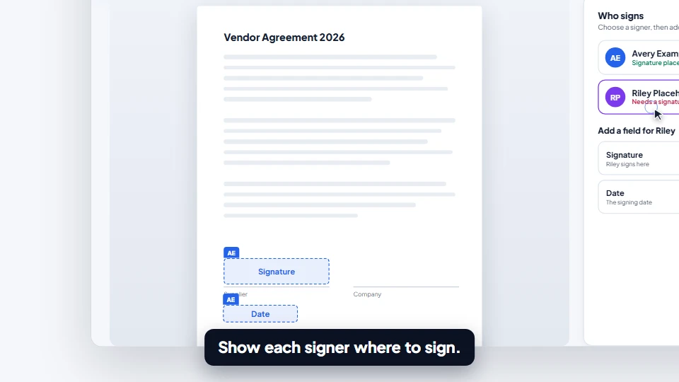

01
Prepare your document
Upload a PDF, add your participants, and place the fields each signer needs to complete.
Vendor agreement.pdfReady for review
✓Bring approvals, signatures, and the next step into one place. Right inside the SharePoint your team already uses.
For internal teams English & Arabic
Meet your next workflow
From a new request to a signed PDF.
See the whole journey in under a minute.
Meet Tawqee. Approve and sign documents without leaving SharePoint. Upload a PDF and choose who signs, in order. Place signature and date fields for each signer. Review the document, draw or type a signature, and confirm. See the request complete. Switch between English and Arabic, with a right-to-left interface. Tawqee combines a SharePoint interface with a PDF processing service.
A simpler route to done
Keep the handoffs clear, from the person who starts it
to the person who signs it.
Upload a PDF, add your participants, and place the fields each signer needs to complete.
Set the order for approvals and signatures. Each person sees what needs their attention.
Participants review and sign. Download the final PDF and follow the request’s activity history.
Thoughtful at every step
Built for the people preparing documents.
And the people who need to act on them.
Position signature, name, and date fields on the PDF. Make it clear who fills in what before you send.

See your requests, your tasks, and where each document stands.
Work in English or Arabic, with a right-to-left Arabic interface.
Request changes with a reason. Revise the document and restart the approval journey with a fresh revision.
A few things to know
Want to talk through your workflow?
Let’s have a conversation.
Yes. Tawqee is a SharePoint Framework application installed on your organization’s SharePoint site. This website introduces the product; your team uses the app within SharePoint.
Requests, tasks, and document files are stored in SharePoint lists and libraries. PDF bytes are sent to a dedicated PDF service for inspection and signature stamping, then the resulting files are saved in SharePoint.
The current scope is internal users in your organization. External and guest signing are not included.
Participants can draw or type a signature, preview it, and confirm it for placement on the PDF. Tawqee does not claim certified digital signatures, tamper-proof records, or legal certification.
Yes. The user interface supports English and Arabic, including a right-to-left Arabic layout. Administrative diagnostics and document-type management are currently in English.
Email sales@forgrise.com to request a demo and discuss a potential pilot. Tawqee is in active development. Production authentication and pilot hardening are still being completed; there is no public self-service signup.
Meet Tawqee by ForgRise
See how Tawqee could fit your team’s SharePoint workflow.